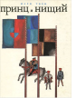

Принц и нищий

Знаменитая повесть американского писателя Марка Твена написана в 1880 г. на основе исторического сюжета о юном короле Эдуарде VI. События, которые происходят в книге, относятся к XVI столетию. Рядом с уродством соседствует красота, рядом с жестокостью - гуманность. Но только справедливость и доброта делают человека человеком.